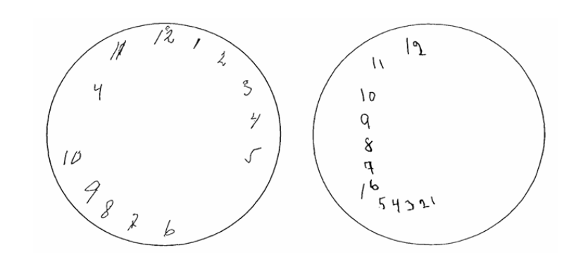
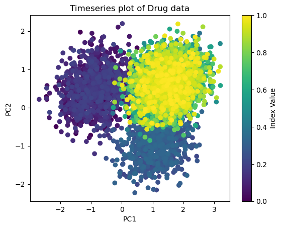
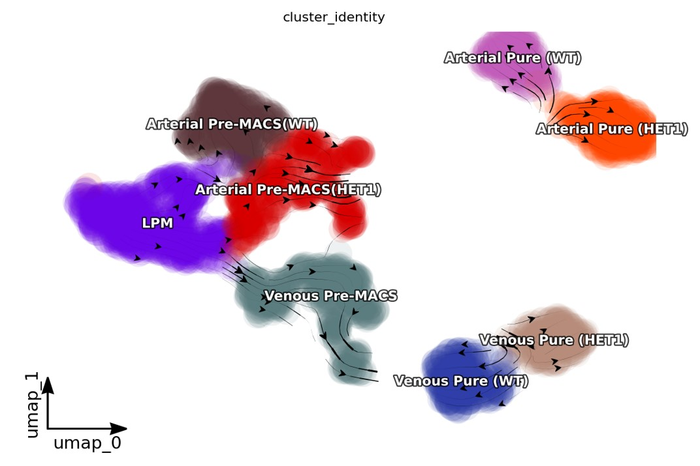
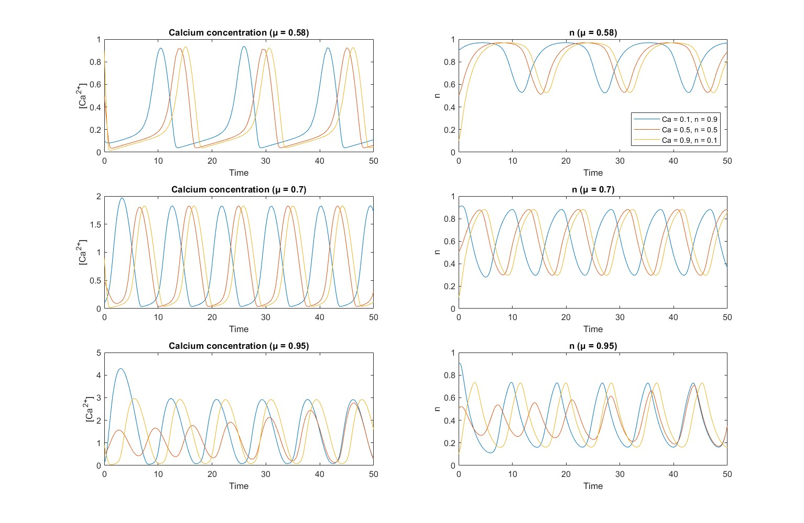
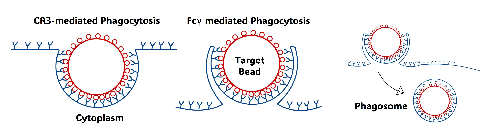

A collection of projects focusing around compuational biology, ranging from scRNA-seq to Alzheimers progression tracking using LSTM's.

CDT Prediction
A proposal detailing a project plan to model indivdual trajectories of ALzheimer's progression using LSTM networks to predict personal future scores on the Clock Drawing cognitive test(CDT) by leveraging wearable data collection methods

PCA to determine protein Conformers
Performed PCA to infer the effect of a drug on whether it produced a novel surface protein conformer. This was tested and then coupled with timeseries data to verify the assumptions.

Benchmarking of Dynamo on scRNA-seq data
This project aimed to benchmark the RNA velocity inference framework Dynamo on scRNA-seq data following the developmental pipeline of epithelial cell differentation and development. The study comprised gaining a full understaning of best practices in current scRNA-seq practices and then investigating the limitations of Dynamo on the provided dataset to highlight capabilities and failure points- such as developmental gaps and no spliced data.

Investigation of Single Pool Calcium Model
This project explores the Atri et al. single-pool calcium model, which replicates intracellular calcium oscillations and wave patterns in Xenopus laevis oocytes. By analysing system dynamics and bifurcations, the model effectively captures experimental behaviours such as oscillations at constant IP3 levels and transitions between steady states and oscillatory regimes.

Pure Diffusion model of Phagocytosis
This paper provides an introduction to the biological mechanisms underlying phagocytosis, focusing on the roles of professional phagocytes and their contributions to immune system function. It explores the diversity of professional phagocytes, such as neutrophils and macrophages, and their specialized roles in pathogen recognition and clearance. Building on this biological foundation, the paper details the development of a numerical model simulating pure diffusion and receptor dynamics on the phagocytic membrane. The model is then extended to incorporate a variable receptor binding strength, allowing for a more realistic representation of receptor-ligand interactions over the course of the simulation.
Phone
+44 07982 823640Address
CambridgeUnited Kingdom